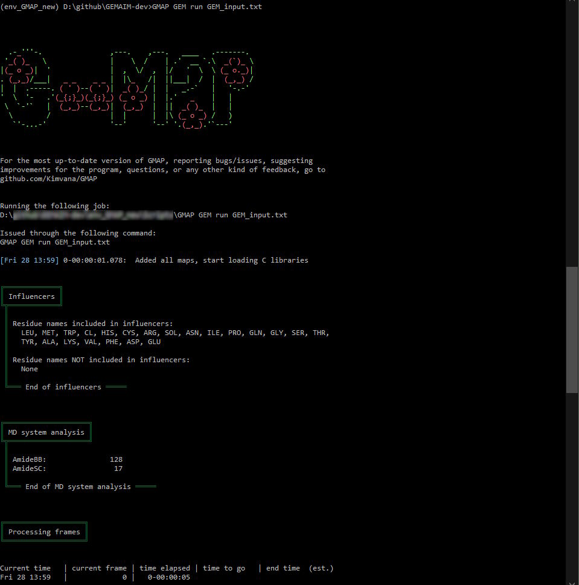

Calculating the amide-I spectrum of a Protein#
This tutorial will demonstrate how to use GMAP’s GEM to calculate the spectrum of the amide-I vibration of a protein. Or, more specifically, how to convert an MD trajectory into a Hamiltionian trajectory, one of the important steps in the spectrum-calculating process.
Before this tutorial, make sure you have/did the following:
You know how to do simple things on the command line. Things like navigating between directories, creating a file/directory, or listing all files present in the current directory.
You have MD trajectory files. Not .pdb files directly from the protein data bank. Trajectories from GROMACS, CHARMM and Amber have been confirmed to work. This tutorial does not cover creating these files or how to perform an MD calculation.
You have done the GMAP installation, and have the enviroment activated. This means that typing ‘GMAP’ on the command line shows the GMAP help.
You have NISE installed. NISE will convert our hamiltonian trajectory into a spectrum. You can use the output files from GEM to follow the NISE tutorial.
Defining the filetree#
This tutorial will be pointing to file locations quite a bit, so lets establish first what our filetree looks like. Note that this example uses GROMACS-style MD files, and windows-style file paths. This matters little, however, just use your own MD package with the corresponding output files, and replace the windows-style paths with those of your OS.
D:\spectra\my_protein_spectra
├── MD_files
│ ├── my_protein.tpr
│ ├── my_protein.xtc
│ └── (optionally other files, too)
├── GEM_files
│ └── (this directory is empty for now)
└── (optionally other files, too)
In this case, we are working on a system called ‘my_protein’. A special directory for calculating spectra has been established, containing a directory for each software package used. This structure is not the only way of doing this, but we’ll use it here. Of course, you should pick a name more indicative of your actual system, make sure to keep replacing ‘my_protein’ with the same term of your choice throughout this tutorial.
This main directory (my_protein_spectra) will contain the scripts, parameter files and perhaps slurm files (when running on a slurm-style cluster). There might be an additional folder with protein data bank files, or maybe you placed these in the MD_files directory. The MD_files directory might contain other files generated while computing the trajectory.
Creating our first input parameter file.#
The input parameter file should be created in the my_protein_spectra directory, and we’ll call it GEM_input.txt:
D:\spectra\my_protein_spectra
├── MD_files
│ ├── my_protein.tpr
│ └── my_protein.xtc
├── GEM_files
│ └── (this directory is empty for now)
└── GEM_input.txt
The contents of the file should (for now) look like this:
topology_file MD_files\my_protein.tpr
trajectory_file MD_files\my_protein.xtc
output_directory GEM_files
log_directory GEM_files
maps_to_use AmideBB AmideSC
couplings_to_use ProteinAmide :All
number_frames 1
Note that a file like this is great to get an initial feel for the program, but doesn’t generate files that are usable for NISE. More information on how to specify parameters in a file like this can be found here.
Hint
The input file above contains only a few of the available parameters. This tutorial introduces a few more later. All available parameters can be found here.
So, to explain what’s happening:
The first two parameters/lines are to tell GEM what input files it should read from. In the example, the files have been specified using relative paths (this is not how GMAP returns paths when printing/logging - those are absolute), which is preferred to make calculations more easily reproducible. More information on these parameters can be found at topology_file and trajectory_file.
The second pair of parameters/lines instruct GEM where it should place its output. Using a different directory for this helps keep our main directory clean and organized. More information on these parameters can be foud at output_directory and log_directory.
Then, we get to the meat of the instructions. We’ve defined the system we’d like GEM to look at, now we need to tell GEM what to look _for_ when analyzing the system. GEM will look for so-called singles, which are dyes, choromophores, oscillators, anything that gives a spectroscopic signal. For each single, GEM will calculate an absorption/resonance frequency (the diagonal of the Hamiltionian). For each pair of singles, a coupling between the two can be calculated.
The first step is to tell GMAP which kind of single we’re interested in. The options available depend on the maps present. GMAP ships with a few options, and more can be downloaded. The maps required for calculating the Amide-I mode of proteins are included with the GMAP download. So, we select them using the parameter maps_to_use. We select two, as AmideBB is meant for amide groups in the protein backbone, while AmideSC works for amide groups in the protein side chains (asparagine and glutamine residues).
Next, we would like to calculate couplings, so we request a coupling map using the parameter couplings_to_use. In this case, we opt for the map designed to couple protein amide groups, dubbed ‘ProteinAmide’, and we tell it that all singles should be computed with it.
As the very last thing, we tell GEM to only treat a single frame. The reason for doing this is that a single frame will be computed fast, so we can quickly see if the program works the way we think it does. We can also look at the file size of the output files - the size scales linearly with the amount of frames. This can give an estimate of the amount of storage space needed to fit all frames.
Running our first calculation#
To use the input file, open a command prompt (windows) or terminal (unix). Navigate to the directory my_protein_spectra, so that typing dir (windows) or ls (unix) lists the GEM_input.txt file we created during the following step. Let’s run the following command:
GMAP GEM run GEM_input.txt
This should start the program. If not, check out the troubleshooting section at the bottom of this page. If everything went well, GMAP will show you all steps of the way, and end with the sentence “That was all for today, folks. Thank you, and good night!”. This will be the first part of the program output:

There are a few things to pay attention to here. First, the command listed under ‘Running the following job’, does it make sense? Most likely, it will not be exactly the same as what you typed in, as you see the full path to the GMAP installation here. Was this the one you requested?
Next, the section ‘Influencers’. Have a close look at the groups of influencers here. Are all names where you’d expect them to be? We didn’t instruct the program to leave ones out, so all should be included. This is also a good opportunity to see what residue names the program detected. Especially with the AmideBB map, but that will become more clear in the following section.
‘MD system analysis’ is where you can see what GMAP found. The base system shipped with GMAP (the one used if none is selected) is 1AKI, it’s output is shown. Its protein consisting of a single chain made of 129 units. The fact the program found 128 AmideBB groups should then be right - these groups connect two units. For your system, make sure to do a similar check. The count of AmideSC might be more difficult to check, but is also less likely to go wrong.
After the ‘Processing frames’ section, we get to the calculation summary. Again, here we want to read carefully if what we see is correct. Does GMAP/GEM recognize the amount of frames in your trajectory correctly? Have all the correct files been used? Or is something in there that you did not intend?
Checking the output files#
legend.txt#
As mentioned above, the AmideBB could skip some residues. This is because proteins can be incredibly varied. If you have a ‘normal’ protein consisting of only cannonical amino acids, it should be recognized fully. However, packages like Amber and CHARMM use slight variations on the cannocal amino acids, which we should check.
Even if you have a normal protein, these checks can’t hurt. So let’s start with the first one:
Open the ‘legend’ file. It should be in your chosen output folder, and named ‘legend.txt’. In it, there is a line for every ‘single’ detected by GMAP. By looking at these, we can see if everything’s there. The first check you can do, is to see if the numbers make sense. Here’s an example of a correctly read system:
at index 0: Oscillator of type AmideBB binding the residues LYS0 and VAL1
at index 1: Oscillator of type AmideBB binding the residues VAL1 and PHE2
at index 2: Oscillator of type AmideBB binding the residues PHE2 and GLY3
at index 3: Oscillator of type AmideBB binding the residues GLY3 and ARG4
at index 4: Oscillator of type AmideBB binding the residues ARG4 and CYS5
at index 5: Oscillator of type AmideBB binding the residues CYS5 and GLU6
at index 6: Oscillator of type AmideBB binding the residues GLU6 and LEU7
at index 7: Oscillator of type AmideBB binding the residues LEU7 and ALA8
at index 8: Oscillator of type AmideBB binding the residues ALA8 and ALA9
at index 9: Oscillator of type AmideBB binding the residues ALA9 and ALA10
These are the 10 first lines from the 1AKI-legend.txt file. When we look at the residues being bound, we see that this is a continuous chain. If your protein consists of a single chain, you’d expect to see exactly this.
If your system has multiple chains, that would show up as this:
at index 0: Oscillator of type AmideBB binding the residues LYS0 and VAL1
at index 1: Oscillator of type AmideBB binding the residues VAL1 and PHE2
at index 2: Oscillator of type AmideBB binding the residues PHE2 and GLY3
at index 3: Oscillator of type AmideBB binding the residues GLY3 and ARG4
at index 4: Oscillator of type AmideBB binding the residues ARG4 and CYS5
at index 5: Oscillator of type AmideBB binding the residues CYS5 and GLU6
at index 6: Oscillator of type AmideBB binding the residues LEU7 and ALA8
at index 7: Oscillator of type AmideBB binding the residues ALA8 and ALA9
at index 8: Oscillator of type AmideBB binding the residues ALA9 and ALA10
You see that one group is missing: The ‘index 5’ and ‘index 6’ don’t share a residue, while all other subsequent ones do. However, there are no numbers missing: 5 ends with residue (GLU)6, while 6 starts with (LEU)7. That means that residues 6 and 7 are both correctly identified, just not bound.
However, if you have a larger gap, that means a residue wasn’t found. Compare the following to the first example:
at index 0: Oscillator of type AmideBB binding the residues LYS0 and VAL1
at index 1: Oscillator of type AmideBB binding the residues VAL1 and PHE2
at index 2: Oscillator of type AmideBB binding the residues PHE2 and GLY3
at index 3: Oscillator of type AmideBB binding the residues GLY3 and ARG4
at index 4: Oscillator of type AmideBB binding the residues GLU6 and LEU7
at index 5: Oscillator of type AmideBB binding the residues LEU7 and ALA8
at index 6: Oscillator of type AmideBB binding the residues ALA8 and ALA9
at index 7: Oscillator of type AmideBB binding the residues ALA9 and ALA10
The residue CYS5 is now fully missing. We skip from ARG4 in the right column to GLU6 in the left column. If you have a similar gap of 2 (or more) residues, so that one (or more) is missing, this is a good indication that the residue in that position was not correctly identified, as it is most likely a non-cannonical amino acid. If this is the case, the output (or log file) should, under ‘Influencers’ give an odd residue names. These are always supported by the program: ALA, ARG, ASN, ASP, CYS, GLN, GLU, GLY, HIS, ILE, LEU, LYS, MET, PHE, PRO, SER, THR, TRP, TYR, VAL. Note down the names of any that should be in the protein, but are not among the 20 listed above.
Hint
Now, the AmideBB map also supports the following residues:
ARN ASH GLH HID HIE HIP HSD LYN LYSH
If any of these are present in your system, but shouldn’t be interpreted as aminoacids, you can overwrite the choice as shown below. If you want to fully disable these special residues, you can use the following line in your input.txt file:
AmideBB.include_protein_residues None
If you have one not in the list, there are two options. It either has a cannonical-like backbone section, or it doesn’t. If it does, it has atoms named C, O, CA, N and H (or HN if you’re using CHARMM). These cases are explained to GEM using a parameter of the AmideBB map. You want to add a single line to your input file, so it looks like this:
topology_file D:\spectra\my_protein_spectra\MD_files\my_protein.tpr
trajectory_file D:\spectra\my_protein_spectra\MD_files\my_protein.xtc
output_directory D:\spectra\my_protein_spectra\GEM_files
log_directory D:\spectra\my_protein_spectra\GEM_files
maps_to_use AmideBB AmideSC
couplings_to_use ProteinAmide :All
number_frames 1
AmideBB.include_protein_residues HIE HSD
In this case, the HIE and HSD residues have been added, as these are quite common for Amber/CHARM systems. But any residue will do. This is where you use the names you noted down earlier. Then, run the calculation again, and do all checks again to see whether it’s running correctly now.
Hint
As of now, the AmideBB map supports the following non-cannonical N- and C-termini:
FOR, ACE, ETA, GL2, NME
If you have residue that doesn’t have a cannonical backbone, it is most likely not in the map yet. If you didn’t download the map/program recently (more than a week ago), check the repo to see if it has been added since. If not, you can either try to change the map yourself using the existing termini as examples (at your own risk!), or submit a feature request to the GMAP repository, as the AmideBB map is created by the GMAP team. Over time, more and more should be added, so this issue should occur less and less often.
output files#
The output files (dipoles, hamiltonian, raman, positions, doublepos, energies) are next to consider. The ones you obtained can’t be directly opened (they’re binary), but that’s fine. We care mainly about the file size. It should be noted that the size of these files should (roughly) scale linearly with the amount of frames treated. This means that you’ve got a good indication here of how large the final files will be.
Usually, the hamiltonian file is significantly larger than the others, so take it’s file size, multiply it with the amount of frames you’d like to treat, and see how large the final file will be. Do you have enough storage to accomodate the file? If not (and this is especially likely for systems above 1000-1500 singles, depending on your exact system), you might have to not compute the hamiltonian at all, but compute the energies and use NISE’s on-the-fly calculations of couplings instead. The disadvantage of this is that the coupling of AmideBB especially can’t always be approximated well by NISE, so GMAP couplings are highly preferred.
couplingvisualization.pdf#
The coupling visualization shows a colored plot of the couplings used for each pair of singles. This plot becomes relevant later, when we choose the final coupling method. For now, it’s enough to have a quick look to familiarize yourself with the contents.
Most important to note is the fact that there are multiple ‘zones’ in the plot corresponding to different types of couplings - one for the nearest-neighbour couplings, and one for the others.
Improving on our first input parameter file.#
Now we have confirmed the program can detect our protein properly, let’s decide on the parameters we’d like to use for the computation. We’ll discuss multiple parameters here, and the section will end with an example input file where everything is combined.
Warning
Not all combinations of choices are recommended. As always, consult the README of any map you’re planning on using, as it should contain all information about these kinds of matters. It does for the AmideBB and AmideSC maps. It is also generally strongly recommended to carefully check out the original related papers as provided.
Firstly, don’t forget to increase the amount of frames with the ‘number_frames’ parameter to the desired amount. Anything larger than the amount of available frames will be ignored, so could safely be used.
Next, what outputs do you need from the program? A full hamiltonian, or is that not possible and would you prefer only energies? Using the parameter ‘output_data’, you can request the full hamiltonian (‘ham’), only the diagonal (the energies, ‘ene’), dipoles (‘dip’), raman tensor (‘ram’), positions (‘pos’) and double positions (‘dbp’). Your choice here will most likely depend on the requirements of the planned NISE calculation.
Then, what model should be used for calculating the frequencies? At the time of writing, the AmideBB and AmideSC maps support 5 common models: the Tokmakoff, Skinner, Jansen, Cho and Hirst models. You can see if this is still true for yours in the map’s readme files. For this example, lets explicitly choose the Skinner map (which is also the default) using the ‘AmideBB.frequency_map_choice’ and ‘AmideSC.frequency_map_choice’ parameters.
The AmideBB and AmideSC maps also allow to choose a dipole model using ‘AmideBB.dipole_map_choice’ and ‘AmideSC.dipole_map_choice’.
Next, using ‘ProteinAmide.coupling_choice’ and ‘ProteinAmide.NN_coupling_choice’, you can select which coupling methods you would prefer for the general coupling, and the nearest-neighbour coupling.
Finally, if you’re computing on a cluster, you can tell GMAP how much time you have available for the calculation using the parameter ‘time_limit’. If the program can’t finish before then, it will safely stop. To guess how long the program will need, you can try extrapolate from how long the 1-frame calculation took, but that gives only a rough estimate. Longer trial-calculations can give better estimates.
When the program quits because of this time limit, it does so safely, and will report what frame it did last. This allows one to do only the remaining frames in a subsequent calculation. GMAP does not yet offer a tool to stitch the outputs of the two runs together, though.
topology_file D:\spectra\my_protein_spectra\MD_files\my_protein.tpr
trajectory_file D:\spectra\my_protein_spectra\MD_files\my_protein.xtc
output_directory D:\spectra\my_protein_spectra\GEM_files
log_directory D:\spectra\my_protein_spectra\GEM_files
maps_to_use AmideBB AmideSC
couplings_to_use ProteinAmide :All
number_frames 50000
time_limit 300 # this is in minutes!
output_data ham dip pos
AmideBB.include_protein_residues HIE HSD # only present if you needed this previously
AmideBB.frequency_map_choice Skinner
AmideSC.frequency_map_choice Skinner
AmideBB.dipole_map_choice Torii
AmideSC.dipole_map_choice Torii
And that should be it! When the calculation starts, don’t forget to double-check the output immediately provided - if it doesn’t match expectations, you can always cancel a calculation.
Troubleshooting#
There’s always something that can go wrong. If you get stuck on any of the steps above, you can find some tips on getting unstuck here.
Running our first calculation#
If you get stuck here, try the following steps. Start at the top, work down the list until you find something that solves your issue.
very carefully check all input file paths used in your file. Are they correct? You could try using absolute paths, and triple-checking the path to use. Navigate to the directory containing the files - such that typing
dir(windows) orls(unix) lists the file. Then, by typingcd(windows) orpwd(unix), you are shown the full absolute path. This path, plus the filename, should match the one in your input file.While the output files don’t exist, the output directory must exist. GMAP will not create a directory to put your output files in, so if it’s missing, make sure to create it.
Try running the
GMAPcommand again in your command line. Does it give the GMAP logo, and some information? There should be no errors raised here. If there are, make sure to resolve those first.Try using the default MD files shipped with GMAP. If the following input file works, but the one before doesn’t, there might be an issue with your MD files:
# topology_file D:\spectra\my_protein_spectra\MD_files\my_protein.tpr # trajectory_file D:\spectra\my_protein_spectra\MD_files\my_protein.xtc # output_directory D:\spectra\my_protein_spectra\GEM_files # log_directory D:\spectra\my_protein_spectra\GEM_files maps_to_use AmideBB AmideSC couplings_to_use ProteinAmide :All number_frames 1
These ‘#’ means that GMAP should ignore the lines. Then, it’ll use the default files instead.